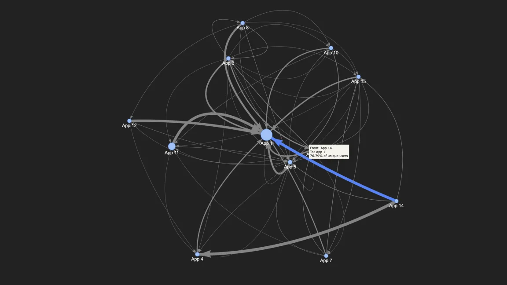

Product analytics
Graph Analysis in App Navigation


I analyzed user interactions within a super app offering services like parking payments, online shopping, movie tickets, and loyalty programs to understand usage patterns and identify underutilized features. Using Python and NetworkX, I built a directed graph where nodes represented app features and edges showed user transitions between them within a set timeframe. Node size reflected the number of unique users, and edge thickness indicated the proportion of transitions.
To make the results actionable, I created an interactive visualization with Pyvis, allowing stakeholders to explore user behavior by hovering over nodes and edges. These insights guided improvements in app design and communication strategies to encourage broader feature adoption.
Back to projects